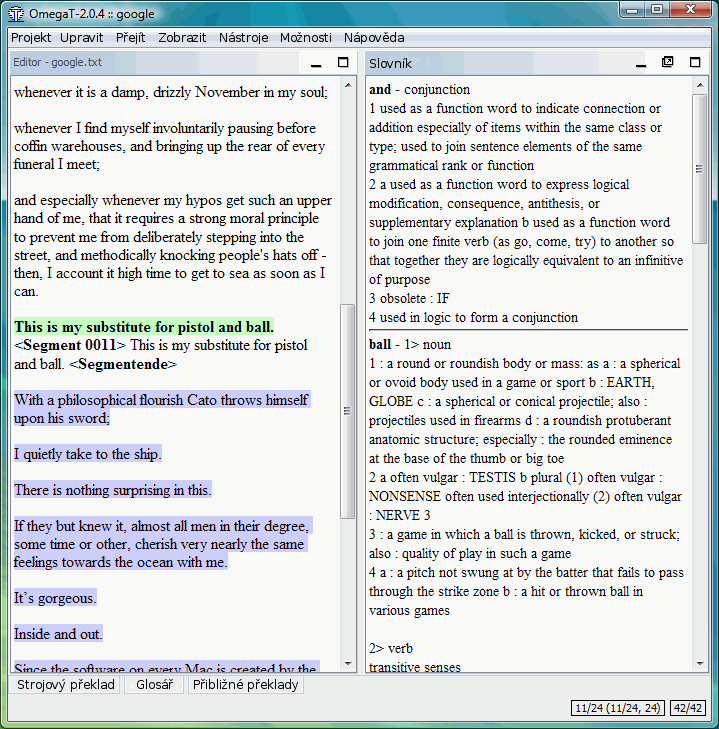

Slovníky
Jak stáhnout a nainstalovat slovníky
Slovníky v aplikaci OmegaT jsou založeny na Platformě StartDict. Chcete-li nainstalovat potřebné soubory, postupujte takto:
- Vyhledejte si požadovanou jazykovou kombinaci, například na zmíněné stránce StartDict nebo na FreeDict
- Stáhněte si soubor - měl by být v archívu tarball (koncovka tar.bz nebo tar.bz2).
- Rozbalte jej použitím untar nebo podobně (např. winrar ve Windows) k extrakci obsahu do projektového adresáře „Dictionary“ / „Slovník“. Měly by tam být tři soubory s koncovkami dict.dz, idx a ifo.
Všimněte si, že kromě slovníků typu „zdroj-cíl“ můžete prostřednictvím okna Slovník, přistupovat k informacím, jako jsou:
- Webster's Revised Unabridged
Dictionary (1913)
- Longman Dictionary of
Contemporary English
- Merriam Webster 10th
dictionary
- The Britannica Concise
Encyclopedia
- ... atd.
Některé slovníky jsou bez podmínek - tj. jsou „zdarma k použití“, a některé z nich, stejně jako výběr výše, jsou pod licencí GPL. Následující příklad ukazuje Merrian Webster 10th dictionary „v akci“:

Problémy se slovníky
Pokud se v podokně Slovník nic neobjeví, zkontrolujte následující:
- Jsou vaše soubory .dict ve složce (nebo v některé z jejích podsložek), které jsou uvedeny v souboru Projektu? Zkontrolujte v okně Vlastnosti projektu (menu Projekt → Vlastnosti nebo
Ctrl + E )?
- Obsahuje adresář tři soubory se stejným jménem a koncovkami dict.dz, idx a ifo? Pokud je zastoupen jen jeden soubor s očekávaným názvem, zkontrolujte koncovku. Jestliže je to tar.bz , tak jste jej zapomněli rozbalit (untar).